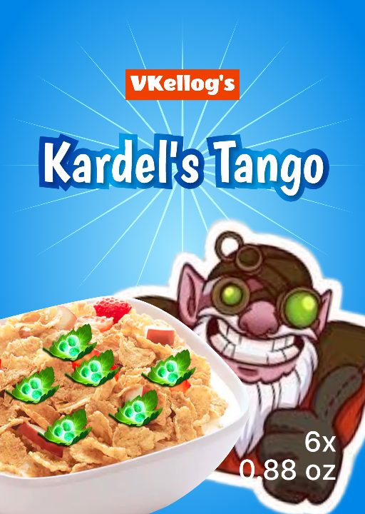
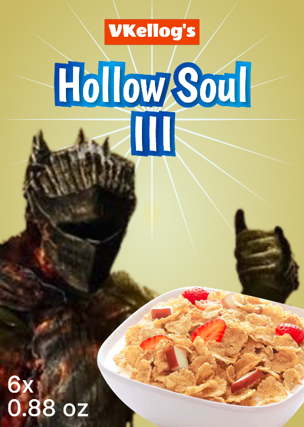

BESTSELLER

Need a cereal that’s tasty AND unique ? Kardel’s Tango got you covered.
Kardel’s Tango adds the already tasty corn flakes and strawberries combination with tango (dehydrated green apple), an organic matter used to consume trees.
A great choice for everyone especially kids !
KARDEL'S TANGO
Need a cereal that’s tasty AND unique ? Kardel’s Tango got you covered.
Kardel’s Tango adds the already tasty corn flakes and strawberries combination with tango (dehydrated green apple), an organic matter used to consume trees.
A great choice for everyone especially kids !

Are your mornings getting bland ?
A delicious cereal to start the day, made from a hollow’s soul (corn flakes) mixed with concentrated charred ember (dehydrated strawberry).
A proper choice for adults with unwavering and indomitable human spirit !
HOLLOW SOUL III
Are your mornings getting bland ?
A delicious cereal to start the day, made from a hollow’s soul (corn flakes) mixed with concentrated charred ember (dehydrated strawberry).
A proper choice for adults with unwavering and indomitable human spirit !
BEST RECIPE